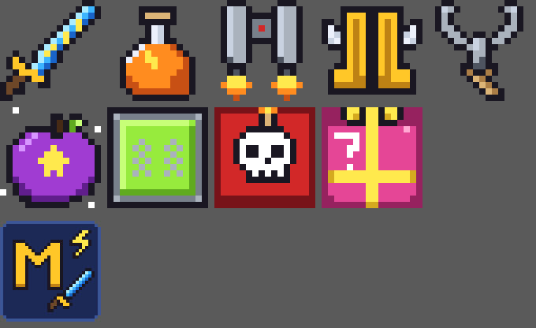

⚡
Mod de Manu
Minecraft 1.21.4 · Fabric · Java 21

Ítems
- Espada de Rayos: clic derecho = rayo donde miras.
- Poción de Lava: 30 s de resistencia al fuego.
- Jetpack: pechera; mantén el salto para volar, con fuego y humo.
- Botas Rápidas: velocidad III y salto II al llevarlas.
- Gancho: clic derecho a un bloque y te lanza hacia allá (40 bloques).
- Manzana Suprema: regeneración IV, resistencia, fuerza, absorción y anti-fuego por 5 min.
Bloques
- Trampolín: te lanza al aire, sin daño de caída.
- Bloque Bomba: explota con redstone, radio 12.
- Bloque Sorpresa: al romperlo suelta 1 cosa al azar (de cobblestone a netherita o tótem).
Mobs
- Zombie de Diamante: suelta 1-3 diamantes y no se quema de día.
- Esqueleto Rey: 60 de vida, más rápido, suelta esmeraldas y a veces un arco encantado nivel 30.
- Los dos aparecen de noche en el Overworld y tienen huevo en creativo.
Todo tiene receta de crafteo: míralas en el libro de recetas.
Necesita: Fabric Loader + Fabric API
⬇ Descargar .jar (42 KB)
Cómo instalar
- Instala Fabric Loader para 1.21.4 (ver abajo).
- Baja Fabric API para 1.21.4 y ponlo en la carpeta
mods.
- Pon
mod-de-manu-1.21.4.jar en la misma carpeta.
- Abre Minecraft 1.21.4 con el perfil Fabric.
🪄
Manu Magia
Minecraft 1.21.4 · Fabric · Java 21
Varitas
- Varita de Fuego: lanza una bola de fuego.
- Varita de Hielo: congela el agua y ralentiza a los mobs.
- Varita de Teletransporte: te lleva al bloque que miras (hasta 64 bloques).
- Varita de Curación: te cura a ti y a los animales cerca.
- Varita de Rayo en Cadena: un rayo a cada mob hostil a 10 bloques.
- Bastón de Gravedad: lanza a los mobs por el aire.
Más
- Poción de Invisibilidad Total.
- Altar Mágico: recarga las varitas y lanza fuegos artificiales.
Recetas: cada varita = su ingrediente arriba (vara de blaze / hielo compacto / perla de ender / manzana dorada / pararrayos / vara de brisa) y dos palos debajo. Altar = amatista arriba, obsidiana-libro-obsidiana al medio, 3 obsidianas abajo. Poción = ojo de araña fermentado + azúcar + botella.
Necesita: Fabric Loader + Fabric API
⬇ Descargar .jar (36 KB)
Cómo instalar
- Instala Fabric Loader para 1.21.4 (ver abajo).
- Baja Fabric API para 1.21.4 y ponlo en la carpeta
mods.
- Pon
manu-magia-1.21.4.jar en la misma carpeta.
- Abre Minecraft 1.21.4 con el perfil Fabric.
⌨️
Manu Comandos
Minecraft 1.21.4 · Fabric · Java 21
- Comandos para todos, sin ser OP.
/hogar set guarda tu casa y /hogar te lleva./vuelo, /curar, /velocidad 1-5, /gigante, /pequeno, /mascota./dia, /noche, /sol, /lluvia./kit inicial, guerrero, minero o mago./tpa <jugador> pide ir donde alguien y /tpaceptar lo acepta./explotar: una explosión que no hace daño.
Necesita: Fabric Loader + Fabric API
⬇ Descargar .jar (22 KB)
Cómo instalar
- Instala Fabric Loader para 1.21.4 (ver abajo).
- Baja Fabric API para 1.21.4 y ponlo en la carpeta
mods.
- Pon
manu-comandos-1.21.4.jar en la misma carpeta.
- Abre Minecraft 1.21.4 con el perfil Fabric.
🏷️
Manu Tweaks
Minecraft 1.21.4 · Fabric · Java 21
- Stackear todo hasta 99, incluso tótems. Se cambia con
/stack <1-99>.
- Tu nametag: ves tu propio nombre como lo ven los demás.
Necesita: Fabric Loader + Fabric API
⬇ Descargar .jar (19 KB)
Cómo instalar
- Instala Fabric Loader para 1.21.4 (ver abajo).
- Baja Fabric API para 1.21.4 y ponlo en la carpeta
mods.
- Pon
manu-tweaks-1.21.4.jar en la misma carpeta.
- Abre Minecraft 1.21.4 con el perfil Fabric.
📦
Manu Tweaks
Minecraft 26.2 · Fabric · Java 25
- Tu nametag: ves tu propio nombre como lo ven los demás.
- PV: cofres personales con
/pv.
Necesita: Fabric Loader + Fabric API + Java 25
⬇ Descargar .jar (14 KB)
Cómo instalar
- Instala Fabric Loader para 26.2 (ver abajo).
- Baja Fabric API para 26.2 y ponlo en la carpeta
mods.
- Pon
manu-tweaks-26.2.jar en la misma carpeta.
- Abre Minecraft 26.2 con el perfil Fabric.